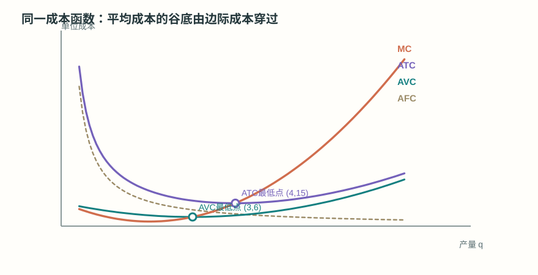
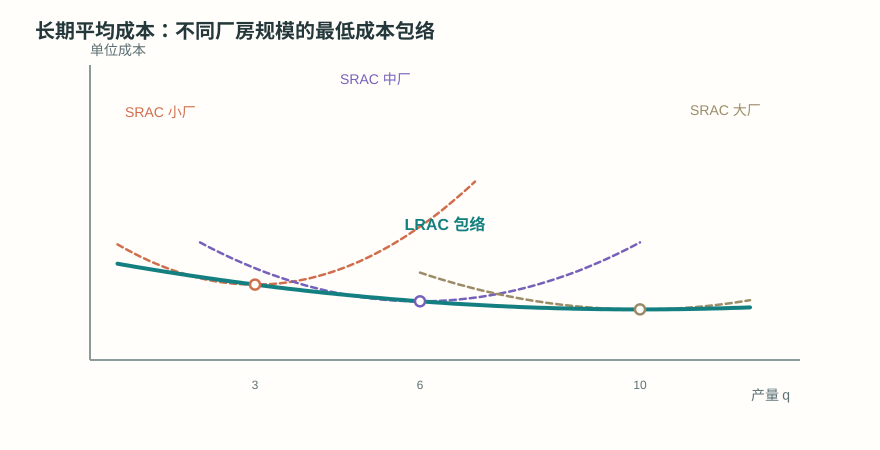

CHAPTER 12 · MICROECONOMICS
成本分析：会计师 vs 经济学家
利润表看得到现金支出，经济学还要计算放弃的替代机会；再用同一条成本函数读懂平均成本与边际成本。
企业到底付出了什么代价？
一家工作室用自有办公室、老板的专业时间和外聘员工共同完成订单。账面上看，办公室没有支付租金、老板也没有给自己发工资，似乎“免费”；但这间办公室可以出租，老板也可以到别处就业。经济学成本不仅记录现金流，还要计算放弃的最佳替代用途。
因此，企业决策的关键不是“有没有付款”，而是“把资源投入这项业务，放弃了什么”。会计报表与经济决策需要不同但互补的成本口径。
显性成本、隐性成本与两种利润
显性成本是实际支付的工资、租金、材料款和利息等；隐性成本是企业使用自有资源的机会成本，例如业主放弃的工资、自己拥有的场地可获得的租金，以及自有资金的最佳替代回报。会计利润只减显性成本，经济利润则把显性和隐性成本都纳入。
假设某工作室年收入1200千元，支付工资、租金和材料共850千元；业主放弃的工资机会成本250千元，自有资本的替代回报150千元。则会计利润350千元，但经济利润为−50千元。它仍有现金盈余，却低于业主把资源投入最佳替代用途所能获得的回报。
| 项目 | 假设金额（千元/年） |
|---|---|
| 营业收入 | 1,200 |
| 显性成本 | 850 |
| 会计利润 | 350 |
| 隐性机会成本 | 400 |
| 经济利润 | −50 |
零经济利润不等于企业没有收入。它意味着企业已覆盖全部机会成本，包括正常资本回报；如果经济利润为正，资源投入该业务比最佳替代方案更有吸引力。
短期成本：固定成本、可变成本和边际成本
短期内至少一种投入不能调整。把固定投入的成本记作 FC，把随产量变化的成本记作 VC，则总成本 TC=FC+VC。平均固定成本 AFC=FC/Q，平均可变成本 AVC=VC/Q，平均总成本 ATC=TC/Q；边际成本 MC 衡量产量再增加一单位带来的成本增量。
为让曲线的交点可复算，设一个假设的短期成本函数，产量 q 以批次计、成本以货币单位计：
所以 FC=32，VC=q³−6q²+15q，MC=3q²−12q+15。注意这是为展示成本曲线关系而构造的平滑函数，不是所有行业的通用成本公式。

| q | FC | VC | TC | AVC | AFC | ATC | MC |
|---|---|---|---|---|---|---|---|
| 1 | 32 | 10 | 42 | 10.00 | 32.00 | 42.00 | 6.00 |
| 2 | 32 | 14 | 46 | 7.00 | 16.00 | 23.00 | 3.00 |
| 3 | 32 | 18 | 50 | 6.00 | 10.67 | 16.67 | 6.00 |
| 4 | 32 | 28 | 60 | 7.00 | 8.00 | 15.00 | 15.00 |
| 5 | 32 | 50 | 82 | 10.00 | 6.40 | 16.40 | 30.00 |
| 6 | 32 | 90 | 122 | 15.00 | 5.33 | 20.33 | 51.00 |
为什么边际成本会穿过平均成本的最低点？
平均数如何变化，取决于新增加的一单位成本高于还是低于当前平均成本。若 MC<ATC，新增一单位会拉低 ATC；若 MC>ATC，则会拉高 ATC。因此在平滑曲线的内点最低值，MC=ATC。对 AVC 同理，MC=AVC 发生在 AVC 的最低点。
本例中，AVC=(q−3)²+6，最低值为6，出现在q=3；ATC=32/q+q²−6q+15，最低值为15，出现在q=4。MC分别在这两个位置与平均曲线相交。不要把 MC=ATC 与 MC=AVC 混为一个交点：它们对应不同平均量。
沉没成本：已经无法收回的钱，不应绑架下一步决策
沉没成本是无论接下来选择什么都无法收回的过去支出。假设企业已经支付一笔不可退款的设计费，这笔费用对今天“是否再接一单”的边际比较不再改变；决策应比较新增收入与新增可避免成本，而不是为了证明过去的支出正确而继续投入。
但固定成本不一定都是沉没成本：可退押金、可转租设备、可取消的未来合同，可能仍可回收或避免。反过来，某些已经发生的可变支出也可能成为沉没成本。关键标准是“现在是否还可改变或回收”，而不是会计科目叫固定还是可变。
长期成本：选择厂房规模与规模经济
长期的定义是企业可以调整所有投入，不存在被技术定义为固定的投入。企业会比较不同厂房规模、设备组合和生产流程，选择以最低成本生产给定产量的方案。若劳动工资为 w、资本租金为 r，总成本等于 wL+rK；在可微的内点成本最小化处，等产量曲线与等成本线相切。
长期平均成本 LRAC 描述在允许调整全部投入和厂房规模时，每个产量可达到的最低平均成本。产量扩大时 LRAC 下降称为规模经济；大致不变称为规模报酬不变对应的规模成本区间；LRAC 上升称为规模不经济。规模经济可能来自固定成本摊薄、专业化、采购议价和网络化生产，也可能被管理复杂度、协调成本和拥堵抵消。

交互成本表：产量改变后，哪条成本在变化？
短期成本计算器
使用 TC=32+q³−6q²+15q，固定成本32；调整产量，实时计算平均成本和边际成本。
q=4，FC=32，VC=28，TC=60；AVC=7，AFC=8，ATC=15，MC=15。
MC为连续函数导数；当q按0.5批变化时，显示的MC是该产量点的瞬时边际成本。
若企业产量由4批提高到5批，平均总成本为何上升？
查看解析
q=4时MC=ATC=15，正好位于ATC最低点；q=5时MC=30，大于此前ATC=15，因此新增产量会把ATC拉高。本例ATC从15升至16.4。
参考资料与模型边界
以下资料用于核对概念定义、推导条件和模型边界。本章数值均为明确标注的教学假设，图解独立绘制。